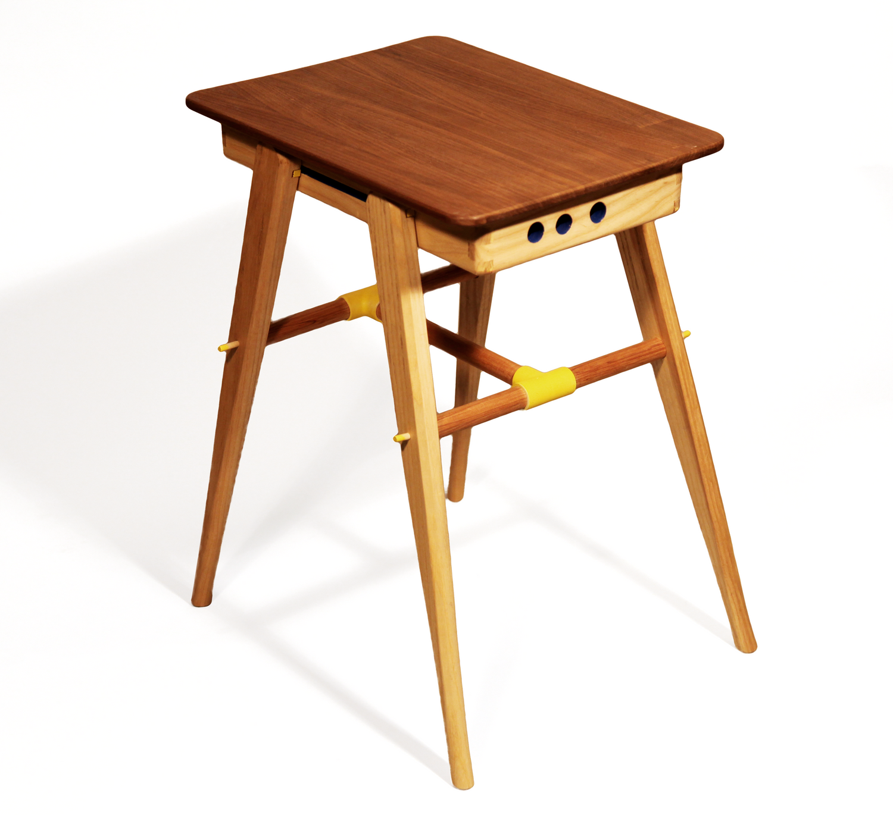
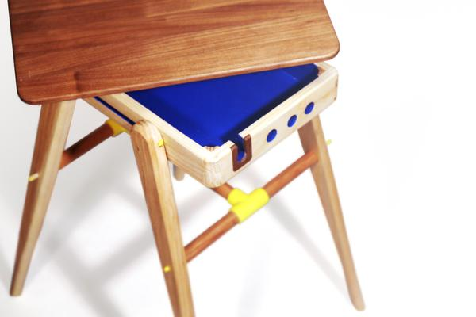
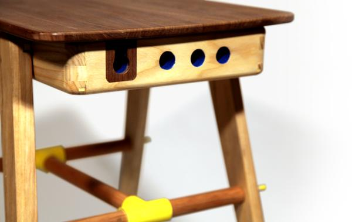
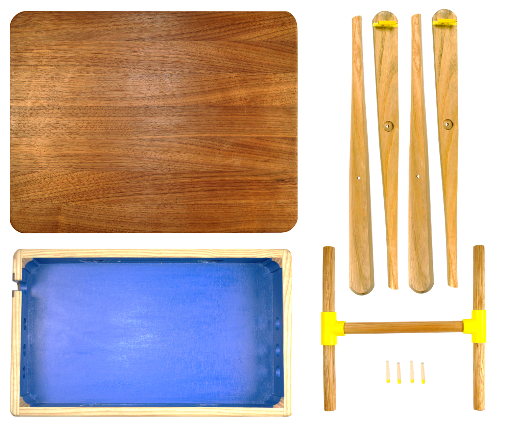
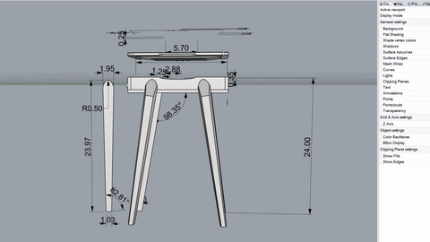
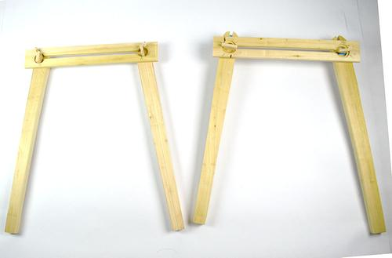
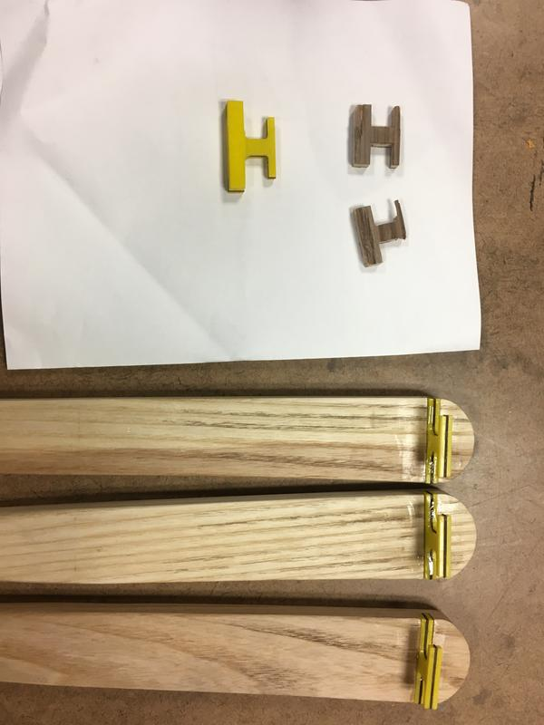
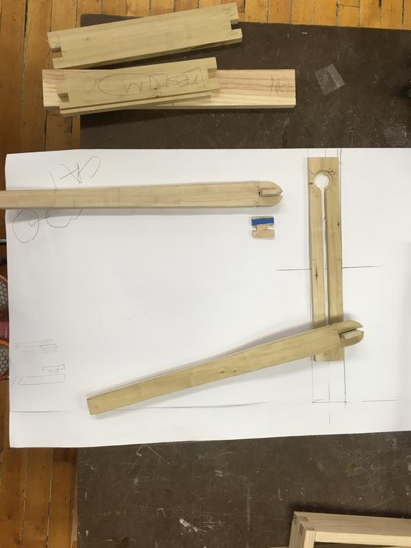

Disassemble whenever you're ready to work someplace else or when you need more space.
Cradler
The Cradler (ˈkrādl·er) serves as a mobile nightstand that allows for efficiency. Its construction allows the Cradler to serve multiple purposes: a table, a storage space, a portable surface. Simultaneously, it allows for cord management.



Bring the lid of the Cradler with you to the bed! When it's time to sleep, simply return both the laptop and the lid.

Above: a complete set of the Cradler's parts.
Materials include: walnut, ash, plywood, PVC, and aluminum.
Process


Launching from initial sketches, the Cradler was prototyped in cardboard. Poplar mockups of the leg joinery to the main container educated a proper angle, hardware design, and stability of the table. With the combination of cardboard and wooden models, necessary dimensions and mechanics were finalized in a Rhino drawing.

